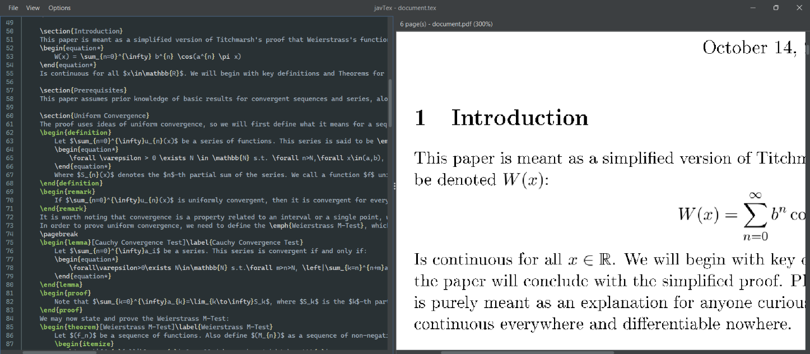

About the project
javTex is a cross-platform LaTeX editor I’m building in Java. The goal is to provide a simple place to write LaTeX, compile documents, and view the resulting PDFs together.

What it can do
- Edit LaTeX with syntax highlighting, line numbers, code folding, and macros.
- Create, open, and save .tex files, with prompts to protect unsaved changes.
- Compile documents through an external pdflatex installation and show build output.
- View compiled PDFs alongside the editor, with multi-page scrolling.
Built with
The application uses Java Swing and targets Java 21 or newer. Maven manages the build and dependencies, including RSyntaxTextArea for editing, ICEpdf for PDF rendering, and FlatLaf for the interface theme.
Building and compiling documents also requires Maven and a LaTeX distribution such as MiKTeX or TeX Live, with pdflatex available on the system PATH.
In progress
javTex is under active development. Compilation relies on the user’s installed LaTeX distribution and available packages, and the PDF viewer currently provides basic image-based rendering and scrolling.